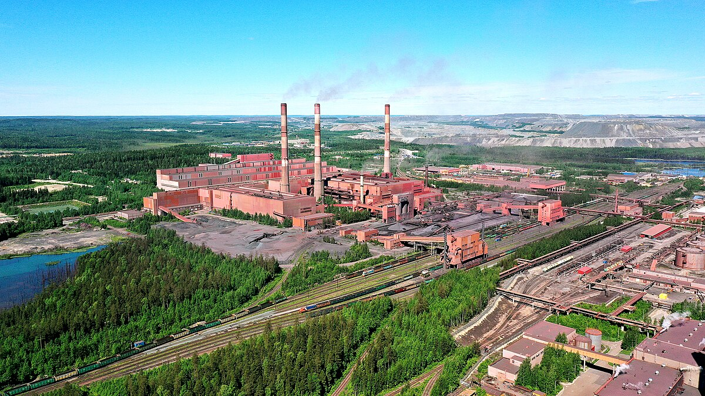

АО «Карельский окатыш»
Предприятие входит в горнодобывающий дивизион крупнейшей в мире сталелитейной и горнодобывающей компании ПАО «Северсталь». Горные работы ведутся с 1982 года на базе Костомукшского месторождения, которое включает железистые кварциты, кристаллические сланцы различного состава и геллефлинты. В марте 2007 года начата добыча и переработка железной руды Корпангского месторождения. В 2008 году компания получила лицензию на разведку и добычу запасов руд Южно-Корпангского участка недр.